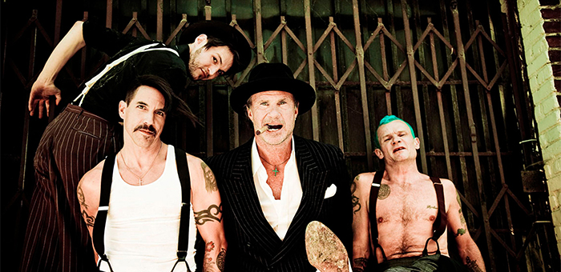

Home
De Band
Red Hot Chili Peppers is een Amerikaanse band die funk, rap, punk en pop combineert met rock. De band is in 1983 opgericht in de Californische stad Los Angeles.
De band bestaat tegenwoordig uit Anthony Kiedis (zang), Flea (bas), Chad Smith (drums) en Josh Klinghoffer (gitaar). Bekende ex-leden zijn onder andere John Frusciante, Hillel Slovak, Jack Irons (van Eleven en Pearl Jam) en Dave Navarro.
De Red Hot Chili Peppers zijn vooral bekend van hun albums Blood Sugar Sex Magik (1991), Californication (1999), By the Way (2002), Stadium Arcadium (2006), I'm With You (2011) en de meest recente The Getaway (2016). Bekende singles zijn onder meer Under the Bridge, Otherside, Californication, By the Way, Dani California en Snow ((Hey Oh)). In 2012 werden de Red Hot Chili Peppers geïntroduceerd in de Rock Hall of Fame.